There are a variety of options available to iscMosaic. In the basic mode, the contents of the specified netCDF file is merged into the existing dataset. Only those areas identified by the source site identifier in the netCDF file are merged; the remainder of the existing grids remain untouched. Using the various options, you can limit the time range scope of the merge, limit the processing to one or just a few weather elements, define an alternative merge mask or bypass the merge and replace the entire grid, and zero out the existing grid inventory before beginning.
Merging of grids is generally achived through "masking". The mask is an edit area. Be default the edit area mask is defined by the site identifier field in each weather element of the incoming netCDF file. For example, if the grids in the netCDF were created by the ifpnetCDF program at Cheyenne (CYS), and then the iscMosaic program was run on the data file at BOU, only the data defined by those grid points in the Boulder's CYS edit area would be merged into the grids. The mask can be disabled, or redefined when the iscMosaic program is run.
The format of the input netCDF file is described in the netCDF Format documentation.
The following three images are from BOU, CYS, and PUB, when merged
and
clipped to their CWA regions, the result is the fourth image.
| 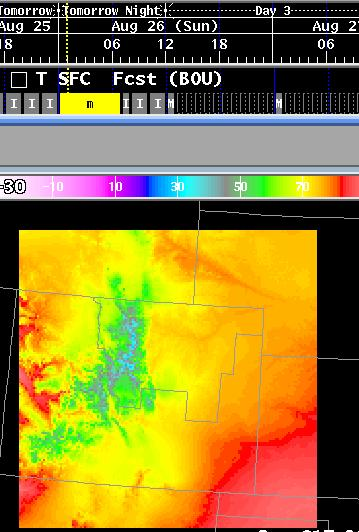 | 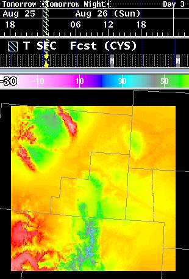 | 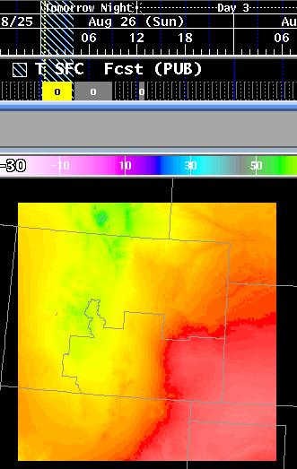 | 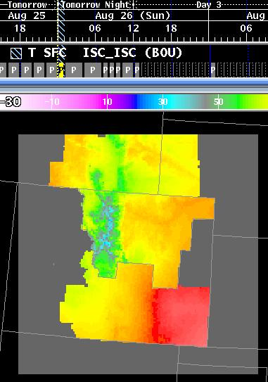 |
| Boulder, CO (BOU) | Cheyenne, WY (CYS) | Pueblo, CO (PUB) | Merge of the three different office grids, each one clipped on its CWA. |
| Switch | Mandatory | Description |
| -h hostname | YES (See Note) | Identifies the hostname upon which EDEX is running. |
| -r rpcport | YES (See Note) | Identifies the RPC port number upon which EDEX is processing requests. |
| -u user | NO | Identifies the user of the program for use in obtaining edit areas from the server. |
| -d outputDatabaseID | YES (See Note) | Defines the destination database to store the grids. This is a full database id, in the form of "siteID_GRID_optType_modelName_modelDate_modelTime", such as BOU_GRID__Fcst_00000000_0000. |
| -p parm | NO | If not present, then all weather elements found in the netCDF file that exist in the destination database will be stored. If present, then only those weather elements will be stored. There can be multiple -p switches, in the form of -p wx1 -p wx2 -p wx3. The name refers to SFC weather elements, to denote a weather element for a different level, use the parmName_level format, such as T_3K. |
| -f inputFile | YES | Specifies the input netCDF file for processing. This file must be in the same format as the output that ifpnetCDF produces. There can be multiple -f switches, in the form of -f file1 -f file2 -f file3. See the restrictions section for more information about command switch compatibility with multiple -f switches are given. |
| -b | NO | Blanking Mode. If enabled, then for all times, other than the times in the incoming grids, any existing grids will have the area defined by the area mask blanked, i.e., set to the minimum data value. If disabled, then no data within the area defined by the area mask will be modified in time periods that are not contained within the incoming grids. For purposes of intersite coordination, which always sends the complete weather element's inventory, the switch must be specified. The -s and -e switches affect the overall time range that ths operation is performed. |
| -s startTime | NO | Start Time. By default, the start time is set to January 1, 1970 at 0000Z. Only incoming grids that contain the start time or start after the start time will be processed. For purposes of intersite coordination, the -s switch should not be specified. |
| -e endTime | NO | Stop Time. By default, the stop time is set way into the future. Only incoming grids that contain the ending time or end before the ending time will be processed. For purposes of intersite coordination, the -e switch should not be specified. |
| -x | NO | Replace Mode. By default, iscMosaic performs merges of the incoming data grids into any existing grids over the region defined by the area mask. If the -x switch is given, then iscMosaic will not perform a merge, but instead will simply replace any existing grid with the incoming grid. For purposes of intersite coordination, the -x switch should not be specified. The -s and -e switches affect the overall time range that this operation is performed. |
| -z | NO | Erase Inventory First. By default, no grids are removed from the destination database. If the -z switch is specified, then before any incoming grids are stored, any existing grids in the database are removed. For purposes of intersite coordination, the -z switch should not be specified. The -s and -e switches affect the overall time range that this operation is performed. |
| -n | NO | Ignore Area Mask. Be default, the site identifier field in the input netCDF file is used to determine the area mask. For example, if the netCDF file site id field is "CYS", then the program will attempt to get the edit area called "ISC_CYS" from EDEX and then only merge those grid points. If the -n switch is present, then the area mask will be ignored and all grid points in the input netCDF will be merged into the database. This mode is not quite identical to the -x replace mode unless the input netCDF file and the destination database contain the same domain (geographical information). There is another mask within the input netCDF file that cannot be disabled. That mask defines valid data points vs. invalid data points. The software will not store invalid data points, despite the absence of a mask. |
| -a altMask | NO | Alternative Mask. By default, the site identifier field in the input netCDF file is used to determine the area mask. For example, if the netCDF file site id field is "CYS", then the program will attempt to get the edit area called "ISC_CYS" from EDEX and then only merge those grid points. The -a switch identifies the name of the edit area used for masking. |
| -w message | NO | Warn/Alert all clients connected to EDEX that data has been processed. This produces a message on the AlertViz indicating that "message" occurred. The site identifier, number of grids, valid time range, and weather elements received are displayed in the message. |
| -k | NO | Delete the input file(s) after processing has been completed. |
| -i parm | NO | If not present, then all weather elements found in the netCDF file that exist in the destination database will be stored or those specified by the -p switch will be stored. If present, the identified weather element, if found in the input file, will be skipped, even if a -p switch is given. There can be multiple -i switches, in the form of -i wx1 -i wx2 -i wx3. The name refers to SFC weather elements, to denote a weather element for a different level, use the parmName_level format, such as T_3K. |
| -l | NO | Lock flag. If set, then only one iscMosaic can run at a time. This switch is used by the intersite coordination software and is not needed for routine use of ifpnetCDF. |
| -D gridDelay | NO | Grid Delay. Specifies the delay between processing of grids. Defaults to 0.25 seconds. The delay is used to lessen the effect of ISC traffic on the loading of EDEX, and hence affects the GFE performance. The value is in seconds, and can be fractional. To eliminate the delay, use the -D 0 switch. |
| -o |
NO |
Use the office type from EDEX.
Incoming weather elements will be renamed if the data
is from a different office type than your own. For example,
receiving QPF data from an RFC at a WFO will have QPF stored as QPFrfc. |
| -S |
NO |
Enables the "ISC Sending" for
this process. Depending upon how the EDEX ISC
configuration is set, different behaviors may be observed. If
"Send ISC On Save" is set, then the Fcst grids will be sent upon
saving. If "Send ISC On Save" is not set, then the user must
manually send the grids via a procedure through the Send Intersite
Grids capability. |
| -T |
NO |
Enables the "translate" mode for
WEATHER and DISCRETE data. If incoming data is not
considered valid per EDEX definition, then the data keys will
be translated to simpler keys that is understood by EDEX.
See translation rules
for more details. |
The following illustrates the concept of merging. Merging is
done
both temporally, and spatially.
| Original Grid, as viewed on the GFE at the remote site. Note the inventory for the grids. The merging will also perform temporal merges. | Grid, after it has been remapped and clipped to the destination's grid domain. | |
| BOU | 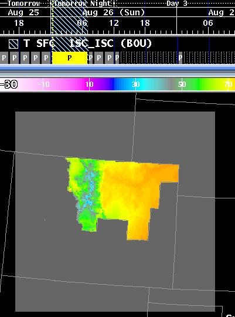 | |
| CYS | 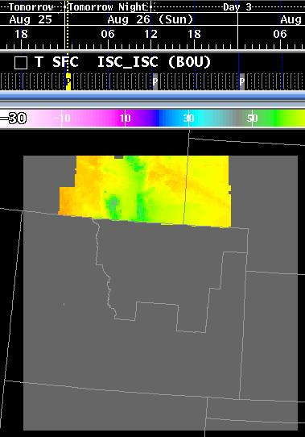 | |
| PUB | 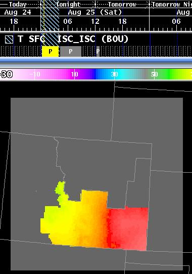 | |
The result of merging the grids is shown in the following image. Note the grids contained within the grid manager for Temperature. The inventory is a temporal blend of the BOU, CYS, and PUB grids.
In the event that data is not available for a particular time period from a site, the merged grid will contain missing data. The missing data is denoted by the weather element's minimum value, such as -30 for temperature, calm for winds, and <NoWx> for weather grids. Here is an example of looping through a sequence of merged grids:
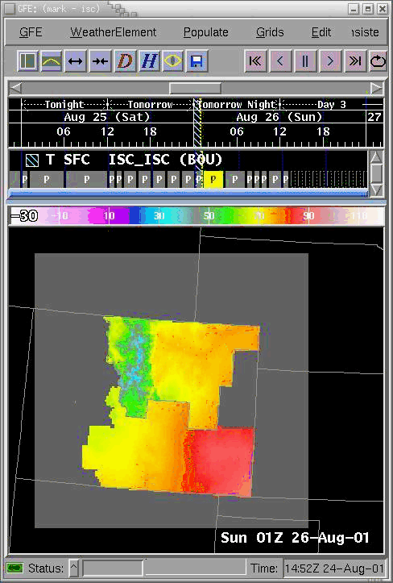
The data written into a grid that has been "blanked" is basically the minimum data value or fill value over the area mask.
Non-Blanking Situation:
| 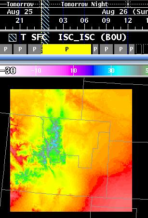 | 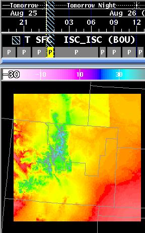 | 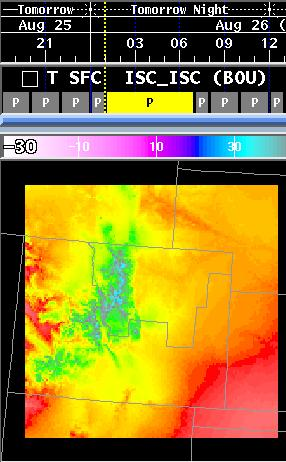 |
| Original Grid before merging. Note the valid time of the grid is 00z-07z. | Merging results in two grids since the merged grid is valid from 00z-01z. The two valid times are 00z-01z, and 01-07z. This is the first grid which now consists of the merged CYS data. | The second grid looks exactly the same as before the merge, since the incoming merged grid valid time (00-01z) does not overlap this grid (01-07z). This is the effect of blanking turned off. |
Blanking Situation:
| 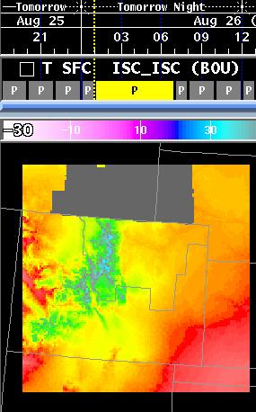 | ||
| Original Grid before merging. Note the valid time of the grid is 00z-07z. | Merging results in two grids since the merged grid is valid from 00z-01z. The two valid times are 00z-01z, and 01-07z. This is the first grid which now consists of the merged CYS data. | The second grid is different since blanking is enabled. Since the incoming merged grid valid time (00z-01z) does not overlap this grid's valid time (01-07z), the area defined by the CYS edit area is masked out (or set to the minimum value) to indicate there is no valid data available. |
Here is an example of an existing grid and the result of performing
a replace. Note that the -a nor the -n switches were provided,
which
caused the grid to be masked over the PUB CWA:
| 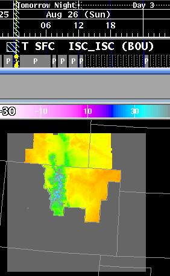 | 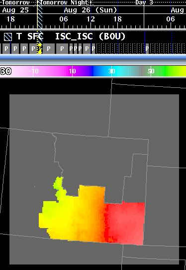 |
| Merged Grid before the PUB grid has been added. | Merged (Replaced) grid after the PUB grid has been added. The PUB grid has completely replaced the CYS and BOU data sets since the -x switch was used. |
The use of no mask is generally used only when replacing grids; it is used in conjunction with the -x switch.
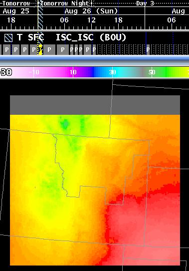
| 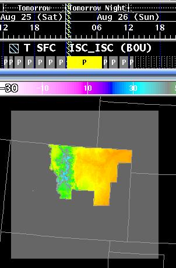 | 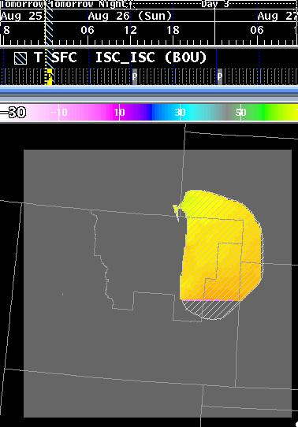 | 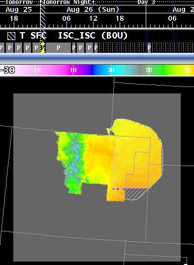 |
| Original Data set before merging. | The incoming data set when masked to the specified area. Note that some of the area is "blank", which was outside the original grid's domain. | The result of the merge. |
It is assumed that you will completely want to replace any existing
grids in the server. The following command line switches are normally
used
for this purpose:
| -h hostname | Hostname upon which EDEX is running |
| -r portNumber | RPC port number upon which EDEX is handling requests |
| -d databaseOutputID | Name of the output database to store the grids |
| -f inputFile | Name of the input netCDF file |
| -x | Replace grids, do not merge. |
| -z | Erase all grids before storing. |
| -n | Do not mask the grids upon storage |
In addition, if you want to completely replace all existing data, then you will probably want to use all of the above switches.
The format of the netCDF file is in the netCDF
file format documentation.